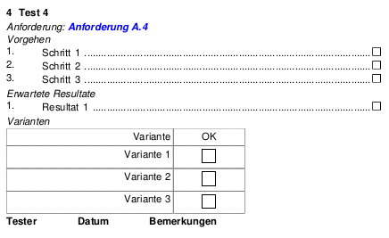

TPEdit

Updates
Die Anwendung TestProtokollEditor oder kurz TPEdit, die in der alten Firma entstanden ist, wurde überholt, durchgetestet und steht wieder zur Verfügung.
 Diese Anwendung dient nicht nur der Verwaltung von Testfällen, sondern gestattet es darüber hinaus, Testprozeduren zu erstellen. Diese Testprozeduren können wiederum als Grundlage für Testprotokolle benutzt werden.
Diese Anwendung dient nicht nur der Verwaltung von Testfällen, sondern gestattet es darüber hinaus, Testprozeduren zu erstellen. Diese Testprozeduren können wiederum als Grundlage für Testprotokolle benutzt werden.
Tests können innerhalb der Testprozedur in Kategorien gruppiert werden. Tests sind im Ablauf klar festgelegte Handlungsanweisungen, die zu einer Menge klar definierter erwarteter Resultate führen.
Tests müssen enthalten:
- Description
- Beschreibung des Tests
- Actions
- Handlungsanweisungen in einer genau definierten Reihenfolge
- ExpectedResults
- Klare Beschreibungen der erwarteten Resultate
- FromVersionMajor
- Major Number der Version, an der dieser Test durchgeführt werden muss (wichtig bei iterativer Entwicklung über mehrere Meilensteine hinweg)
- FromVersionMinor
- Minor Number der Version, an der dieser Test durchgeführt werden muss (wichtig bei iterativer Entwicklung über mehrere Meilensteine hinweg)
Tests können enthalten:
- Variants
- Manchmal unterscheiden sich Testfälle nur in einer der Handlungsanweisungen für die Durchführung. Diese Unterschiede können dann als Varianten hinterlegt werden
- RequirementID
- Existiert ein Requirements Dokument mit Anforderungen, aus dem sich Tests ableiten lassen, kann man die entsprechende Stelle dieses Dokuments hier referenzieren
Bei der Erstellung dieser Anwendung kam es vor allem auf einfachste Bedienung an. Das Erfassen von Testfällen sollte so intuitiv wie möglich sein. Daher werden die Testschritte und die erwarteten Resultate einfach als Text hintereinander eingegeben: Leerzeilen trennen dabei Testschritte und erwartete Resultate voneinander.
Der Anwender, der die Testprozedur erstellt, ist nicht gezwungen, bestimmte Formatierungen einzuhalten, die über die bereits erwähnten Leerzeilen hinausgehen.
Testprozeduren werden als PDF oder als Dockbook-Artikel erstellt. Man kann die entstehenden Docbook-Dokumente weiter bearbeiten und anschließend in verschiedene Ausgabeformate transformieren. Über diesen Weg ist es zum Beispiel möglich, eine HTML-Variante der Testprozedur zu erzeugen.
Aktualisierung vom 8. Juni 2013

Checkboxen in der Testprozedur helfen bei der Nachverfolgung der vorschriftsmäßigen Testdurchführung
Screenshots
Screenshots
{kind=link}
{kind=link}
{kind=link}
{kind=link}
{kind=link}
Artikel, die hierher verlinken
TPEdit erstellt interaktive Formulare
02.11.2019
Die Ausrichtung des Editors für Testprozeduren und Checklisten verlagert sich mehr und mehr auf die Erstellung interaktiver Formulare zur Vermeidung von Medienbrüchen
TPEdit mit Referenzen
29.06.2018
Die Anwendung zur Erstellung von Testprozeduren und Checklisten wurde erweitert und flexibilisiert...
FOP und PDF-Formulare mittels iText
08.09.2016
Der Editor für Testprozeduren und Checklisten verfügte bereits seit längerer Zeit über eine Vielzahl von Features - allerdings mit dem Fokus auf Protokolle, die in Papierform erzeugt und ausgefüllt wurden. Das hat sich nun geändert...
FOP und PDF-Formulare
28.08.2016
Der Editor für Testprozeduren und Checklisten verfügte bereits seit längerer Zeit über eine Vielzahl von Features - allerdings mit dem Fokus auf Protokolle, die in Papierform erzeugt und ausgefüllt wurden. Das ändert sich gerade...
TPEdit unterstützt Tags
03.07.2013
Nachdem ich auf eine kleine Anwendung namens Trello gestoßen bin, bin ich nun auch davon überzeugt, daß die Indizierung von Informationen über Schlagworte nicht immer nutzlos ist. Das hat dazu geführt, daß TPEdit nunmehr auch Tags versteht.


Vor 5 Jahren hier im Blog
-
SSH und MFA
23.06.2019
Ein kleiner Auffrischer zum Wochenende
Weiterlesen...
Tags
Android Basteln C und C++ Chaos Datenbanken Docker dWb+ ESP Wifi Garten Geo Git(lab|hub) Go GUI Gui Hardware Java Jupyter Komponenten Links Linux Markdown Markup Music Numerik PKI-X.509-CA Python QBrowser Rants Raspi Revisited Security Software-Test sQLshell TeleGrafana Verschiedenes Video Virtualisierung Windows Upcoming...
Neueste Artikel
- SQL Funktionen in SQLite als BeanShell-Scripts
Ich habe bereits hin und wieder über Erweiterungen der sQLshell berichtet, die bestimmte spezifische, proprietäre Features des jeweiligen DBMS in der sQLshell verfügbar machen.
Weiterlesen... - Spieleengine IX
Es gibt seit Ewigkeiten mal wieder Neues von meiner eigenen Spieleengine!
Weiterlesen... - Neue Version plantumlinterfaceproxy napkin look
Es gibt eine neue Version des Projektes plantumlinterfaceproxy - Codename napkin look.
Weiterlesen...
Manche nennen es Blog, manche Web-Seite - ich schreibe hier hin und wieder über meine Erlebnisse, Rückschläge und Erleuchtungen bei meinen Hobbies.
Wer daran teilhaben und eventuell sogar davon profitieren möchte, muß damit leben, daß ich hin und wieder kleine Ausflüge in Bereiche mache, die nichts mit IT, Administration oder Softwareentwicklung zu tun haben.
Ich wünsche allen Lesern viel Spaß und hin und wieder einen kleinen AHA!-Effekt...
PS: Meine öffentlichen GitHub-Repositories findet man hier - meine öffentlichen GitLab-Repositories finden sich dagegen hier.